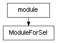

class cymel.core.cyobjects.cyobject.ModuleForSel¶

- class cymel.core.cyobjects.cyobject.ModuleForSel(name)¶
ベースクラス:
module現在のセレクションを反映させるプロパティを追加するモジュールクラス。
既存モジュール名を指定して置き換える。
Methods:
__init__(name)既存モジュール名を指定して置き換える。
selected([sel])セレクションから
CyObjectリストを得る。selobj([i])現在選択されている i 番目の
CyObjectを得る。Attributes:
- sel¶
現在選択されている最初の
CyObjectを得るプロパティ。selobjを引数無し(i=0)で呼び出すこととほぼ等しいが、 何も選択されていない状態だと None となり、エラーにはならない。- 戻り値の型:
CyObjector None
Methods Details:
- __init__(name)¶
既存モジュール名を指定して置き換える。